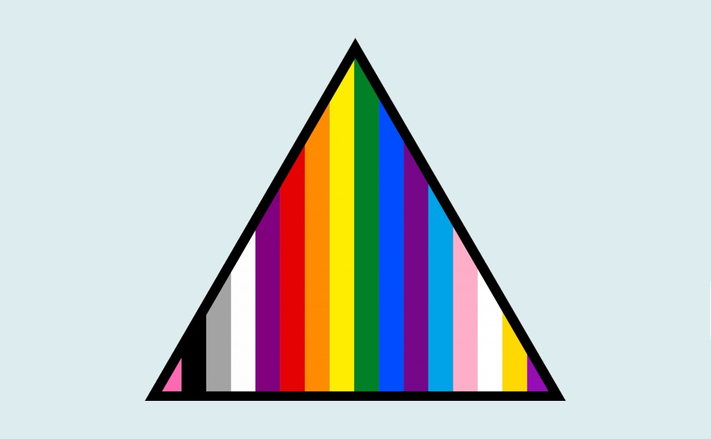

LGBTQ+ Hotlines by Country
USA
The Trevor Project
1-866-4-U-TREVOR (866-488-7386)
The Trevor Helpline (For homosexuality questions or problems): 1-800-850-8078
The GLBT National Help Center Hotline:
1-888-THE-GLNH (888-843-4564)
Gay, Lesbian, Bisexual and Transgender (GLBT) Youth Support Line
1-800-850-8078
Gay & Lesbian National Hotline
1-888-843-4564
Gay & Lesbian National Hotline
For Youth: 1-800-246-7743
Gay & Transgender Hate Crime Hotline
1-800-616-HATE
Trans Lifeline- Crisis Prevention
1-877-565-8860
United Kingdom
Lesbian & Gay Switchboard: 0121 622 6589
Lothian Gay & Lesbian Switchboard - Scotland: (Scotland Only) 0131 556 4049
Crisis and Help Hotlines by Country
USA
The National Suicide Prevention Lifeline
1-800-273-TALK (8255)
Rape and Sexual Assault: 1-800-656-4673
Depression Hotline: 1-630-482-9696
Suicide Hotline: 1-800-784-8433
Suicide Crisis Line: 1-800-999-9999
National Adolescent Suicide Helpline: 1-800-621-4000
National Suicide Prevention Helpline: 1-800-273-TALK (8245)
LifeLine: 1-800-273-8255
Sexuality Support: 1-800-246-7743
Eating Disorders Hotline: 1-847-831-3438
Grief Support: 1-650-321-5272
National Youth Crisis Support: 1-800-448-4663
Runaway: 1-800-843-5200, 1-800-843-5678, 1-800-621-4000
Canada
Suicide Hotline: 1-800-SUICIDE (2433)
24/7 Crisis Line: 905-522-1477
United Kingdom
Suicide Hotline: 1-800-SUICIDE (2433)
Austrailia
Lifeline Australia: 13-11-14
Singapore
Suicide Hotline: 1-800-SUICIDE (2433)
